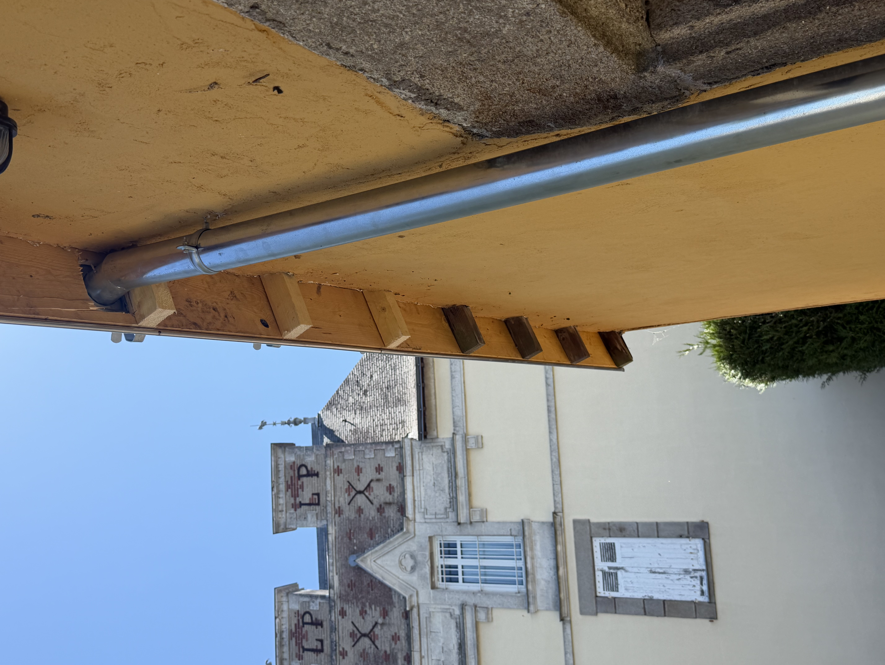
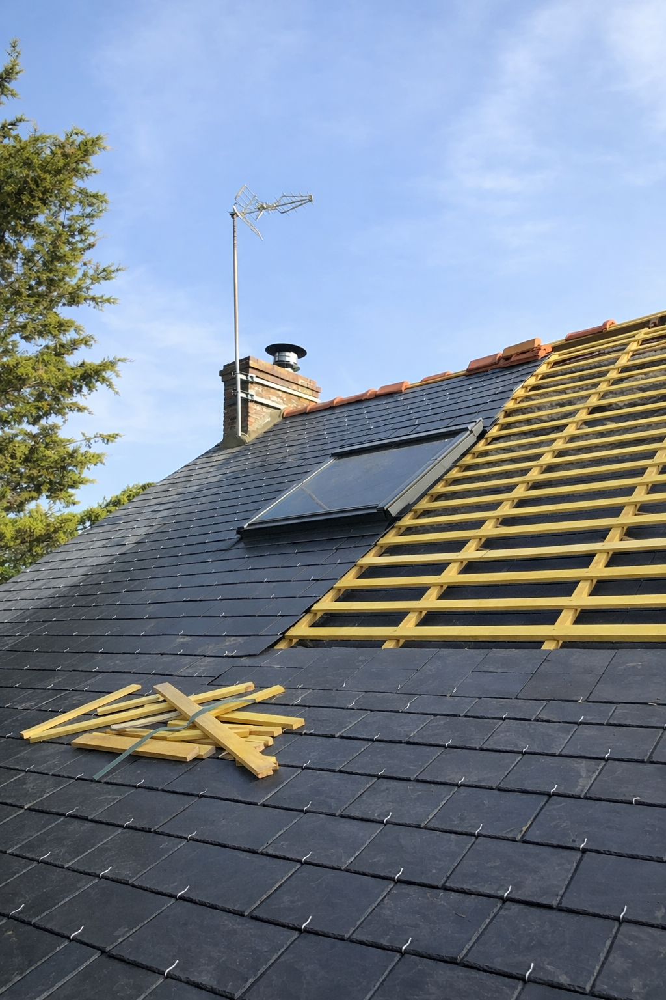
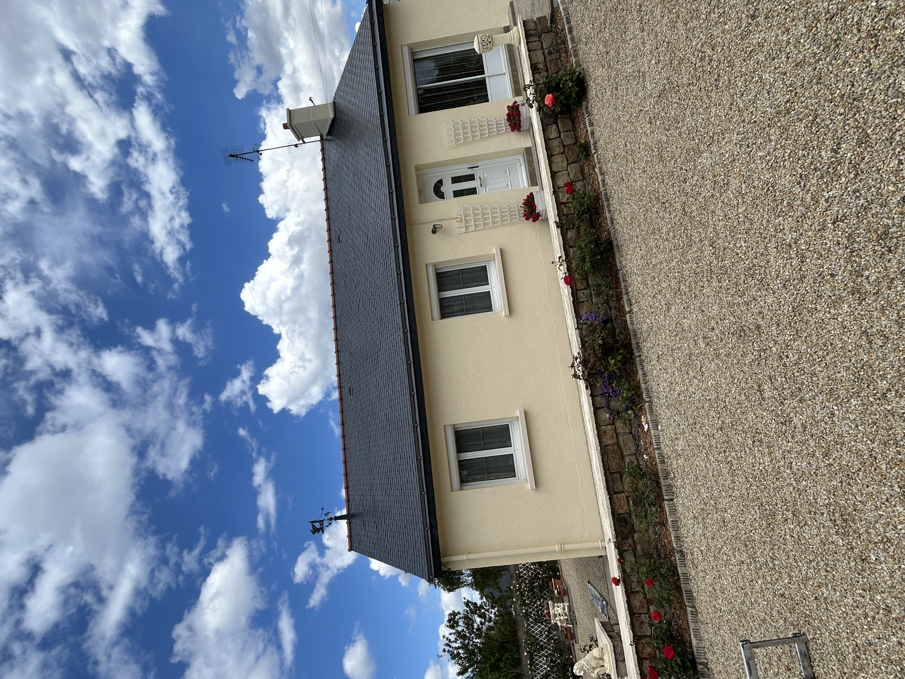
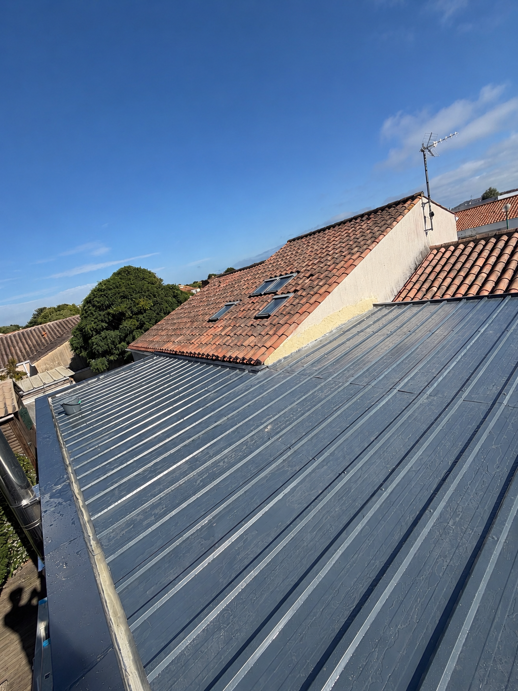

Découvrez quelques-unes de nos interventions

Charpente

Remaniement de toiture

Installation de Velux

Hydrofuge coloré

Zinguerie

Nettoyage anti-mousse

Remaniement de tôle bac acier
📍 Nos zones d'intervention
A.S COUVERTURE intervient rapidement à Vallons-de-l'Erdre ainsi que dans toute la Loire-Atlantique (44), notamment à :
Ancenis • Nort-sur-Erdre • Riaillé • Candé • Châteaubriant • Carquefou • Saint-Mars-la-Jaille • Ligné • Oudon • Le Cellier • Teillé • Mouzeil • Petit-Mars
Nous réalisons tous vos travaux de couverture, zinguerie, charpente, nettoyage de toiture, démoussage, hydrofuge coloré et pose de Velux.